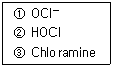
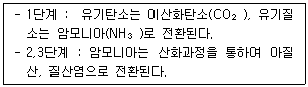
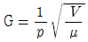
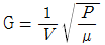
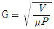
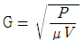
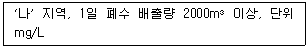
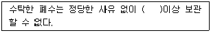

수질환경산업기사 (2007-05-13 기출문제)
1과목: 수질오염개론
1. 소수성 콜로이드 입자가 전기를 띠고 있는 것을 조사하고자 한다. 다음 실험 중에서 어떤 것이 가장 적합한가?
- 콜로이드 입자에 강한 빛을 조사하여 틴달 현상을 조사한다.
- 콜로이드 용액의 삼투압을 조사한다.
- 한외현미경으로 입자의 Brown 운동을 관찰한다.
- 전해질을 소량 넣고 용질을 조사한다.
(정답률: 알수없음)

2. pH 8인 자연수에서 가장 많이 존재하는 알칼리도 유발물질은?
- CO2
- HCO3-
- CO3-2
- OH-
(정답률: 알수없음)
3. 친수성 콜로이드(Colloid)의 특성에 관한 설명으로 알맞지 않은 것은?
- 물과 쉽게 반응하며, 염에 매우 민감하다.
- 틴달효과는 약하거나 거의 없다.
- 다량의 염을 첨가하여야 응결 침전된다.
- 존재 형태는 유탁(에멀젼)상태이다.
(정답률: 알수없음)
4. 다음은 물의 특성에 관한 설명이다. 이 중 잘못된 것은?
- 물은 기화열이 커서 생물의 효과적인 체온조절이 가능하다.
- 물의온도가 상승하면 표면장력이 증가한다.
- 물은 비열이 커서 수온의 급격한 변화를 방지해 준다.
- 물이 고체인 경우 수소결합에 의해 육각형의 결정구조를 가진다.
(정답률: 알수없음)
5. 폭이 60m, 수심이 1.5m 로 거의 일정한 하천에서 유량을 측정하였더니 18m3/sec 였다. 하류의 어떤 지점에서 측정한 BOD 농도가 20mg/L이었다면 이로부터 상류 40km 지점의 BODu의 농도는? (단, K1=0.1/day(자연대수인 경우), 중간에는 지천이 없으며 기타 조건은 고려하지 않음)
- 28.9mg/L
- 25.2mg/L
- 23.8mg/L
- 21.6mg/L
(정답률: 알수없음)
6. 0.⑤N의 약산인 초산이 4% 해리되어 있다면 이 수용액의 pH는?
- 3.4
- 3.1
- 2.7
- 2.4
(정답률: 알수없음)
7. 지하수 수질의 수직분포 내용이 잘못된 것은? (단, 수질의 수직분포라 함은 동일 수층에서 상, 하의 수질차를 말한다.)
- 산화-환원 전위 : 상층수-고(高), 하층수-저(低)
- 유리탄산 : 상층수-대(大), 하층수-소(小)
- 염분 : 상층수-대(大), 하층수-소(小)
- 알칼리도: 상층수-소(小), 하층수-대(大)
(정답률: 알수없음)
8. 어느 폐수의 BOD5가 200mg/L이고 탈산소계수가 0.1/day 일때 BOD3 값은? (단 상용대수 기준)
- 123mg/L
- 178mg/L
- 107mg/L
- 146mg/L
(정답률: 알수없음)
9. 용존산소가 풍부한 수중에서 미생물에 의해 단백질이 분해될 때 옳은 과정은?
- Amino acid → NH3-N → NO2-N → NO3-N
- NH3-N → NO2-N → NO3-N → Amino acid
- NO3-N → NO2-N → NH3-N → Amino acid
- Amino acid → NO3-N → NO2-N → NH3-N
(정답률: 알수없음)
10. pH값이 1.8인 산성폐수 50톤에 NaOH 90%분말을 사용하여 중화시키려고 한다. 이때 사용되는 NaOH 양은? (단 NaOH 분자량=40, 폐수비중 1.0 기준)
- 약 53.2kg
- 약 49.2kg
- 약 35.2kg
- 약 28.2kg
(정답률: 알수없음)
11. 어느 하수의 BOD5가 275mg/L이고 COD가 500mg/L인 경우에 NBDCOD는? (단, BODu 값은 BOD5의 1.5배이다.)
- 67.5mg/L
- 77.5mg/L
- 87.5mg/L
- 97.5mg/L
(정답률: 알수없음)
12. 박테리아(분자식 : C5H7O2N) 5g 호기성 분해 시 이론적 소요산소량은? (단, CO2, NH3, H2O으로 분해됨)
- 4.08g
- 5.08g
- 6.08g
- 7.08g
(정답률: 알수없음)
13. 어떤 하천수의 수온은 10℃이다. 20℃의 탈산소계수 K(상용대수)가 0.15/day일 때 [ BOD5/BODU]는? (단, KT = K20 × 1.047(T-20))
- 약 0.61
- 약 0.66
- 약 0.71
- 약 0.76
(정답률: 알수없음)
14. 해수의 화학적 성질에 관한 설명으로 알맞지 않은 것은?
- 해수의 pH는 8.2로서 약알칼리성을 가진다.
- 해수의 주요성분 농도비는 지역에 따라 다르며 염분은 적도해역에서 가장 낮다.
- 해수의 밀도는 수온, 염분, 수압의 함수이며 수심이 깊을수록 증가한다.
- 해수 내에 중요성분 중 염소이온은 19000mg/L 정도로 가장 높은 농도를 나타낸다.
(정답률: 알수없음)
15. 남조류(Blue-green algae)에 관한 설명으로 틀린 것은?
- 독립된 세포핵이 있다.
- 세포벽의 구조는 박테리아와 흡사하다.
- 광합성 색소가 엽록체 안에 들어 있지 않다.
- 호기성 신진대사를 하며 전자공여체로 물을 사용한다.
(정답률: 알수없음)
16. 음용수를 염소 소독할 때 살균력이 강한 순서로 된 것은? (단, 강함 → 약함)

- ① → ② → ③
- ② → ① → ③
- ③ → ② → ①
- ③ → ① → ②
(정답률: 알수없음)
17. pH = 6.0인 용액의 산도의 4배를 가진 용액의 pH는?
- 4.5
- 4.9
- 5.4
- 5.7
(정답률: 알수없음)
18. 산성폐수에 NaOH 0.7%용액 150mL를 사용하여 중화하였다. 같은 산성폐수 중화에 Ca(OH)2 의 0.7%용액을 사용한다면 Ca(OH)2 용액은 몇 mL가 필요한가? (단, 원자량 Na : 23 , Ca : 40, 폐수비중은 1.0 로 본다.)
- 약 207mL
- 약 137mL
- 약 92mL
- 약 81mL
(정답률: 알수없음)
19. 인구 50만의 신도시가 건설되어 인구 1명당 하루에 BOD 250mg/L, 200L씩의 물을 하천으로 배출한다. 하수유입 전 하천수의 유량이 100000m3/day 이고 BOD가 2.0mg/L이었다면 하수 유입후의 하천의 BOD는? (단, 완전혼합, 합류점 기준)
- 98mg/L
- 102mg/L
- 112mg/L
- 126mg/L
(정답률: 알수없음)
20. 혐기성 조건하에서 400g의 glucose(C6H12O6)로부터 발생 가능한 CH4가스의 용적은? (단, 완전분해, 표준상태 기준)
- 약 60L
- 약 80L
- 약 110L
- 약 150L
(정답률: 알수없음)
2과목: 수질오염방지기술
21. BOD가 500mg/L인 4000m3/day의 도시하수를 처리하는 종말처리장의 년간 운영비가 25,000,000원이다. 어떤 공장의 BOD가 800mg/L, 유량 1000m3/day인 폐수를 자체 내에서 완전처리하여, 방류한다면, 이 공장에서 년간 얼마의 폐수처리장 운영비가 들어가는가? (단 BOD 량 기준)
- 800,000원
- 1,000,000원
- 1,500,000원
- 2,000,000원
(정답률: 알수없음)
22. 폐수 속에 염산 18.25g을 중화시키려면 수산화칼슘 몇 g 이 필요한가? (단, Cl의 원자량 35.5, Ca의 원자량 40이다.)
- 18.5g
- 24.5g
- 37.5g
- 44.5g
(정답률: 알수없음)
23. 다음 중 주류(main stream)공정에서는 유기물을 제거하고 축류(side stream)공정에서 인을 처리하는 공정은?
- A/O공정
- Phostrip 공정
- Bardenpho 공정
- SBR 공정
(정답률: 알수없음)
24. 혐기성 소화조 운전 시 이상발포(맥주모양의 이상발포)의 원인과 가장 거리가 먼 것은?
- 온도상승
- 유기물의 과부하
- 과다배출로 조 내 슬러지
- 스컴 및 토사의 퇴적
(정답률: 알수없음)
25. 1차 침전지로 유입하는 생하수의 SS농도가 300mg/L이고 유출수의 SS농도는 30mg/L이다. 유량이 1000m3/d 일 때 침전지에서 발생되는 슬러지의 양은? (단 슬러지의 함수율은 96%이고 비중은 1.0으로 본다. 유기물 분해 중 기타조건은 고려하지 않음)
- 4.2m3/d
- 4.9m3/d
- 5.9m3/d
- 6.8m3/d
(정답률: 알수없음)
26. 보통 음이온 교환수지에 대하여 가장 일반적인 음이온의 선택성 순서로 알맞는 것은?
- SO4-2 ＞ I-1 ＞ NO3-1 ＞ CrO4-2 ＞ Br-1
- SO4-2 ＞ NO3-1 ＞ CrO4-2 ＞ Br-1 ＞ I-1
- SO4-2 ＞ CrO4-2 ＞ NO3-1 ＞ I-1 ＞ Br-1
- SO4-2 ＞ CrO4-2 ＞ I-1 ＞ NO3-1 ＞ Br-1
(정답률: 알수없음)
27. 수은함유 폐수를 처리하는 공법과 가장 거리가 먼 것은?
- 황화물침전법
- 흡착법
- 이온교환법
- 알칼리환원법
(정답률: 알수없음)
28. 도금공장에서 발생하는 CN계 폐수 30m3를 NaOCl를 사용하여 처리하고자 한다. 폐수내 CN-농도가 150mg/L일 때, 공장의 폐수를 처리하는데 필요한 이론적인 NaOCl 량은? (단 반응식 : 2NaCN+5NaOCl+H2O → N2+2CO2+2NaOH+5NaCl, 나트륨 원자량 : 23, 염소 원자량 : 35.5)
- 20.9kg
- 22.4kg
- 30.5kg
- 32.2kg
(정답률: 알수없음)
29. Jar test 에서의 Alum 최적주입율(最適注入率)이 20ppm이라면 420m3/hr 의 폐수에 필요한 Alum 7.5%의 량은?
- 102 L/hr
- 112 L/hr
- 122 L/hr
- 132 L/hr
(정답률: 알수없음)
30. 직경이 10m 이고 평균깊이가 2.5m 인 1차 침전지가 1200m3/d 의 폐수를 처리할 때 체류시간은?
- 약 2시간
- 약 4시간
- 약 6시간
- 약 8시간
(정답률: 알수없음)
31. 접촉산화법에 관한 설명으로 가장 거리가 먼 것은?
- 슬러지 반송이 필요 없고 조 내 슬러지 보유량이 크며 생물상이 다양하다.
- 분해속도가 낮은 기질제거에 효과적이다.
- 부하, 수량 변동에 대하여 완충능력이 있다.
- 영향인자를 정상상태로 유지하기 위한 조작이 용이하다.
(정답률: 알수없음)
32. 다음의 조건하에서 5mol의 글리신(glycine : CH2(NH2)COOH)의 이론적 산소요구량은?

- 280g O2 / 5mol glycine
- 360g O2 / 5mol glycine
- 480g O2 / 5mol glycine
- 560g O2 / 5mol glycine
(정답률: 알수없음)
33. 원형 침전지에 있어서 2000m3/day 의 폐수가 유입할 때 수면적 부하율 16m3/(m2ㆍday)로 하면 월류되는 침전지의 둘레 길이는?
- 약 45m
- 약 40m
- 약 35m
- 약 30m
(정답률: 알수없음)
34. 1000m3의 폐수를 부유물질농도가 200mg/L일때 처리효율이 70%인 처리장에서 발생슬러지량(m3)은? (단, 부유물질처리만을 기준으로 하며 기타조건을 고려하지 않음, 슬러지 비중 : 1.03, 함수율 95%)
- 2.36
- 2.46
- 2.72
- 2.96
(정답률: 알수없음)
35. 활성슬러지공법 에서 SVI가 100일때 포기조의 MLSS 농도를 3000mg/L로 유지하기 위해서는 슬러지 반송율을 원유입수의 몇 %로 하면 되는가? (단 기타 조건은 고려하지 않음)
- 48%
- 43%
- 39%
- 32%
(정답률: 알수없음)
36. BOD 용적부하 0.2kg/m3ㆍday 로 하여 유량 300m3/d, BOD 200mg/L 인 폐수를 활성슬러지법으로 처리하고자 한다. 필요한 폭기조의 용량은?
- 100m3
- 200m3
- 300m3
- 400m3
(정답률: 알수없음)
37. 폐수 플럭형성탱크에서 속도구배(G), 유체의 점도(μ), 소요동력(P)과 탱크부피(V)의 관계식 표현이 적절한 것은? (단, 단위는 적절하다고 가정함)




(정답률: 알수없음)
38. 생물학적 고도처리공법인 A/O공정 중 호기조의 주된 역할은?
- 인의 과잉섭취
- 인의 과잉방출
- 인의 과잉용해
- 인의 과잉산화
(정답률: 알수없음)
39. 포기조 용적이 1000m3, MLSS가 3000mg/L인 활성슬러지조(연속교반형)에서 매일 30m3의 폐슬러지를 소화조로 보내 처리한다. 폐슬러지 농도가 1%라면 슬러지체류시간(SRT)는? (단, 기타 조건은 고려하지 않음)
- 2일
- 5일
- 10일
- 12일
(정답률: 알수없음)
40. BOD가 200mg/L인 폐수 1000m3/d 를 활성슬러지법으로 처리할 대 폭기조의 MLSS 농도가 1900mg/L, F/M비가 0.3kg-BOD/kgㆍ MLSSㆍday 이라면 폭기조의 BOD 용적부하는 몇 kg/m3ㆍday 인가?
- 0.57 kg/m3ㆍday
- 0.68 kg/m3ㆍday
- 0.79 kg/m3ㆍday
- 0.92 kg/m3ㆍday
(정답률: 알수없음)
3과목: 수질오염공정시험방법
41. 원자흡광광도법에서 검량선 작성법 중 측정치가 흩어서 상쇄하기 쉬우므로 분석값의 재현성이 높아지고 정밀도를 향상시키는 것으로 가장 적절한 것은?
- 검량선법
- 표준첨가법
- 내부표준법
- 절대 검량선법
(정답률: 알수없음)
42. 수질오염공정시험방법에서 '항량될 때까지 강열한다'는 말은 어떤 의미를 가지고 있는가?
- 같은 조건에서 1시간 더 강열했을 때 전후 무게차가 1g 당 0.1mg 이하일 때
- 같은 조건에서 1시간 더 강열했을 때 전후 무게차가 1g 당 0.3mg 이하일 때
- 같은 조건에서 1시간 더 강열했을 때 전후 무게차가 1g 당 0.5mg 이하일 때
- 같은 조건에서 1시간 더 강열했을 때 전후 무게차가 1g 당 1.0mg 이하일 때
(정답률: 알수없음)
43. 가스크로마토그래피의 ECD검출기에 선택적으로 검출되는 주된 물질이라 볼 수 없는 것은?
- 유기할로겐화합물
- 유기인화합뮬
- 니트로화합물
- 유기금속화합물
(정답률: 알수없음)
44. 흡광광도법에서 흡광도가 1.0에서 2.0으로 증가하면 투과도는?
- 1/2로 감소한다.
- 1/5로 감소한다.
- 1/10로 감소한다.
- 1/100로 감소한다.
(정답률: 알수없음)
45. 100mL의 시료를 가지고 부유물질을 측정한 결과 다음과 같은 결과를 얻었다. 전체 부유물질(건조된 고형물기준) 중에서 휘발성 부유물질이 차지하는 %(무게기준)은? (단, 용기의 무게=18.4623g, 건조시킨 후 : (용기 + 건조된 고형물)무게 = 18.5112g, 휘발시킨 후(용기 + 재)의 무게 = 18.4836g)
- 41.0%
- 44.1%
- 56.0%
- 59.8%
(정답률: 알수없음)
46. 노말헥산 추출물질 측정에 관한 설명으로서 틀린 것은?
- 폐수 중 비교적 휘발되지 않는 탄화수소, 탄화수소유도체, 그리스유상물질 및 광유류를 분석한다.
- 시료를 pH 2 이하의 산성에서 노말헥산으로 추출한다.
- 시료용기는 유리병을 사용하여야 한다.
- 광유류의 양을 시험하고자 할 때에는 활성규산마그네슘 칼럼을 이용한다.
(정답률: 알수없음)
47. 원자흡광광도법으로 수은을 측정 시 시료 내 벤젠, 아세톤 등 유기물질을 제거하는 방법으로 적절한 것은?
- 과황산칼륨 분해 후 헥산으로 추출분리
- 과망간산칼륨 분해 후 헥산으로 추출분리
- 염산히드록실아민 용액으로 휘발시켜 공기제거
- 아연분말을 첨가, 휘발시켜 통기제거
(정답률: 알수없음)
48. 투과율법을 이용한 색도의 측정에 관한 설명 중 틀린 것은?
- 색도의 측정은 시각적으로 눈에 보이는 색상에 관계없이 단순 색도차 또는 단일 색도차를 계산한다.
- 시료 중 부유물질은 제거하여야 한다.
- 아담스-니컬슨(Adams-Nickerson)의 색도공식을 근거로 한다.
- 표준물질과 비슷한 색상의 폐하수에는 적용할 수 없다.
(정답률: 알수없음)
49. 중크롬산칼륨에 의한 화학적 산소요구량 측정 시 사용되는 적정액은?
- 티오황산나트륨 용액
- 황산제일철암모늄 용액
- 아황산나트륨 용액
- 수산나트륨 용액
(정답률: 알수없음)
50. 다음 중 DO미터의 영점 조정 시에 사용하는 시약은? (단, 격막전극법)
- 1% 아황산나트륨용액
- 5% 아황산나트륨용액
- 1% 과황산칼륨용액
- 5% 과황산칼륨용액
(정답률: 알수없음)
51. 알칼리성 100℃에서 KMnO4에 의한 COD 측정법에서 최종적으로 적정할 때 무슨 색으로 될 때까지 적정 하는가?
- 무색
- 묽은 청색
- 적색
- 청색
(정답률: 알수없음)
52. 시료의 전처리 과정 중 '회화에 의한 분해' 에 대한 설명으로 가장 적절한 것은?
- 목적성분이 400℃이상에서 쉽게 휘산 및 회화될 수 있는 시료에 적용된다.
- 목적성분이 400℃ 이상에서 쉽게 휘산되지 않고 쉽게 회화될 수 있는 시료에 적용된다.
- 목적성분이 600℃ 이상에서 쉽게 휘산 및 회화될 수 있는 시료에 적용된다.
- 목적성분이 600℃이상에서 휘산되지 않고 쉽게 회화 될 수 있는 시료에 적용된다.
(정답률: 알수없음)
53. 페놀류 측정에 관한 다음 기술 중 틀린 것은?
- 유리제 시료용기를 사용한다.
- 인산을 가하여 pH4 이하로 조정한 후 황산동을 1g/L 첨가하여 4℃에서 시료를 보존한다.
- 시료의 최대보존기간은 적절한 전처리를 했을 경우에는 약 48시간 정도이다.
- 적색의 안티피린계색소의 흡광도를 측정하여 분석한다.
(정답률: 알수없음)
54. 다음 중 이온크로마토그래피법에서 써프레서에 대한 설명으로 틀린 것은?
- 분석하고자 하는 목적성분의 전도도를 증가시킨다.
- 용리액 자체의 전도도를 감소시킨다.
- 칼럼형과 격막형이 있다.
- 에폭시수지로 만든 관에 음이온교환수지를 충전시킨 것이다.
(정답률: 알수없음)
55. 흡광광도법으로 측정할 때의 흡수셀의 재질과 파장범위를 연결한 것이다. 알맞지 않은것은?
- 유리제-가시부 파장범위
- 석영제-자외부 파장범위
- 유리제-근적외부 파장범위
- 플라스틱제-근자외부 파장범위
(정답률: 알수없음)
56. 취급 또는 정장하는 동안에 밖으로부터의 공기 또는 다른 가스가 침입하지 아니하도록 내용물을 보호하는 용기는?
- 밀폐용기
- 기밀용기
- 밀봉용기
- 차단용기
(정답률: 알수없음)
57. 가스크로마토그래피법으로 측정하지 않은 항목은?
- 비소
- 유기인
- PCB
- 알킬수은
(정답률: 알수없음)
58. 다음은 이온크로마토그래피법의 장치에 관한 설명이다. 틀린 것은?
- 액송펌프 : 펌프는 150~350 kg/cm2 압력에서 사용될 수 있어야 하며 작동 중 맥동이 일어나서는 안된다.
- 시료의 주입부 : 일반적으로 -밸브에 의한 주입방식이 많이 이용되며 시료주입량은 보통 50~100㎕이다.
- 분리컬럼 : 써프레서형과 비써프레서형이 있다.
- 검출기 : 일반적으로 음이온 분석에는 열전도도 검출기를 사용한다.
(정답률: 알수없음)
59. 다음 0.25N 중크롬산칼륨액 조제 방법에 관한 설명 중 틀린 것은?
- 0.25N 중크롬산칼륨액의 조제에는 표준시약 (분자량 : 294.2)을 사용한다.
- 중크롬산칼륨(표준시약)을 사용하기 전에 103℃에서 2시간 동안 건조한 다음 건조용기(실리카겔)에서 식힌다.
- 건조용기(실리카겔)에서 식힌 중크롬산칼륨 14.71g을 정밀히 담아 물에 녹여 1000mL로 한다.
- 0.025N 중크롬산칼륨액은 0.25N 중크롬산칼륨액 100mL를 정확히 취하여 물을 넣어 정확히 1000mL로 한다.
(정답률: 알수없음)
60. 시료의 보존방법 및 기간에 대한 설명 중 맞는 것은?
- BOD용 시료는 0℃ 보관, 최대 48시간동안 보존한다.
- COD용 시료는 황산 또는 질산을 첨가하여 pH 4이하, 최대 7일간 보존한다.
- 유기인용 시료는 4℃ 보관, pH 4 이하로 최대 7일간 보존한다.
- 질산성질소용 시료는 4℃보관, 최대 48시간 보존한다.
(정답률: 알수없음)
4과목: 수질환경관계법규
61. 초과부과금부과대상 오염물질이 아닌 것은?
- 유기물질
- 부유물질
- 트리클로로에틸렌
- 클로로폼
(정답률: 알수없음)
62. 1인당 5대의 낚시대를 사용하여 낚시제한구역 안에서 낚시행위를 한 경우 벌칙기준은?
- 300만원 이하의 과태료
- 200만원 이하의 과태료
- 100만원 이하의 과태료
- 과태료 부과대상이 아님
(정답률: 알수없음)
63. 기타 수질오염원에 해당되지 않는 시설은?
- 5홀의 골프장
- 면적 1000m2의 자동차 폐차장 시설
- 물 사용량이 1일 10m3인 조류의 알을 물 세척만 하는 시설
- 물 사용량이 1일 10m3인 1차 농산물을 물 세척만 하는 시설
(정답률: 알수없음)
64. 폐수배출시설 또는 방지시설의 적정운영에 필요한 시운전 기간을 맞게 나타낸 것은? (단, 가동개시일로부터의 기간임)
- 생물화학적처리방법인 경우(다만, 가동개시일이 11월 1일부터 다음연도 1월 31일까지에 속하지 않는 경우) : 60일
- 물리적 처리방법인 경우 : 20일
- 생물화학적 처리방법인 경우(다만, 가동개시일이 11월 1일부터 다음연도 1월 31일까지에 속하는 경우) : 80일
- 화학적 처리방법인 경우 : 30일
(정답률: 알수없음)
65. 폐수배출시설인 석탄광업시설의 제외시설 기준으로 맞는 것은?
- 채탄능력 15000톤/월 미만의 시설을 제외한다.
- 채탄능력 12000톤/월 미만의 시설을 제외한다.
- 채탄능력 10000톤/월 미만의 시설을 제외한다.
- 채탄능력 8000톤/월 미만의 시설을 제외한다.
(정답률: 알수없음)
66. 조류경보 시 취, 정수장 관리자가 조치하여야 하는 사항과 가장 거리가 먼 것은?
- 조류증식 수심이하로 취수구 이동
- 정수처리강화(활성탄 처리, 오존처리)
- 정수의 독소분석 실시
- 주 2회 이상 시료채취 및 분석
(정답률: 알수없음)
67. 일일유량 산정을 위한 일일조업시간에 관한 내용으로 가장 적절한 것은?
- 측정하기 전 최근 조업한 30일간의 배출시설의 조업시간 최대치로서 시간으로 표시한다.
- 측정하기 전 최근 조업한 30일간의 배출시설의 조업시간 최대치로서 분으로 표시한다.
- 측정하기 전 최근 조업한 30일간의 배출시설의 조업시간 평균치로서 시간으로 표시한다.
- 측정하기 전 최근 조업한 30일간의 배출시설의 조업시간 평균치로서 분으로 표시한다.
(정답률: 알수없음)
68. 초과부과금 산정시, 폐수무방류배출시설의 유출, 누출계수에 적용하는 배출허용기준 초과율별 부과계수 기준은?
- 400%이상 (7)
- 300%이상 400%미만 (6)
- 200%이상 300%미만 (5)
- 100%이상 200%미만 (4)
(정답률: 알수없음)
69. 수질 및 수생태계 환경기준 중 하천의 '사람의 건강보호 기준'의 기준 값이 틀린 것은?
- 카드뮴: 0.⑤mg/L 이하
- 비소 : 0.⑤mg/L 이하
- 납 : 0.⑤mg/L 이하
- 6가크롬 : 0.⑤mg/L 이하
(정답률: 알수없음)
70. 수질환경보전법에서 사용되는 용어의 정의로 틀린 것은?
- 폐수라 함은 물에 액체성 또는 고체성의 수질오염물질이 혼입되어 그대로 사용할 수 없는 물을 말한다.
- 불투수층이라 함은 빗물 또는 눈 녹은 물 등이 지하로 스며들 수 없게 하는 아스팔트, 콘크리트 등으로 포장도니 도로, 주차장, 보도 등을 말한다.
- 강우유출수라 함은 점오염원 또는 비점오염원의 수질오염물질이 혼입되어 유출되는 빗물 또는 눈 녹은 물 등을 말한다.
- 기타 수질오염원이라 함은 점오염원 및 비점오염원으로 관리되지 아니하는 수질오염물질을 배출하는 시설 또는 장소로서 환경부령이 정하는 것을 말한다.
(정답률: 알수없음)
71. 폐수무방류배출시설의 세부설치기준으로 틀린 것은?
- 배출시설에서 발생하여 분리, 집수시설로 유입하는 폐수의 괸로는 육안으로 관찰할 수 있게 설치하여야 한다.
- 폐수의 수집, 이송, 처리, 저장은 고정된 관로를 통하여 이루어지도록 하여야 한다.
- 폐수의 수집, 이송, 처리, 저장을 위하여 사용되는 설비는 폐수의 누출을 감지할 수 있는 장비를 설치하는 것을 원칙으로 한다.
- 배출시설의 처리공정도 및 폐수 배관도는 누구나 알아볼 수 있도록 주요 배출시설 설치장소 및 폐수처리장에 설치하여야 한다.
(정답률: 알수없음)
72. 사업장의 규모별 구분의 기준으로 맞는 것은?
- 연중 가장 많이 폐수를 배출한 날을 기준으로 하여 정한다.
- 연간 폐수 배출량을 평균하여 기준으로 정한다.
- 측정전 최근 조업한 30일간의 폐수 배출량의 최대치를 기준으로 정한다.
- 측정전 최근 조업한 30일간의 폐수 배출량의 평균치를 기준으로 정한다.
(정답률: 알수없음)
73. 폐수처리업자가 폐수의 처리능력과 처리가능성을 고려하여 수탁하여야 하나 이를 준수하지 아니하였을 경우, 폐수 처리업자에게 부과되는 범칙기준은?
- 1년 이하의 징역 또는 1천만원 이하의 벌금
- 1천만원 이하의 벌금
- 5백만원 이하의 벌금
- 3백만원 이하의 벌금
(정답률: 알수없음)
74. 오염물질의 배출허용기준으로 알맞은 것은?

- BOD 60이하, COD 70 이하, SS 60이하
- BOD 70이하, COD 80 이하, SS 70이하
- BOD 80이하, COD 90 이하, SS 80이하
- BOD 90이하, COD 100 이하, SS 90이하
(정답률: 알수없음)
75. 수계영향권별 대권역 수질보전을 위한 기본계획을 수립하는 자는?
- 대통령
- 환경부장관
- 유역환경청장
- 시ㆍ도지사
(정답률: 알수없음)
76. 다음 내용을 폐수처리업자의 준수사항이다. ( )안에 맞는 내용은?

- 5일
- 10일
- 20일
- 30일
(정답률: 알수없음)
77. 비점오염방지시설의 유형 중 자연형 시설에 해당되지 않은 것은?
- 저류시설
- 여과시설
- 인공습지
- 침투시설
(정답률: 알수없음)
78. 다음 중 수질오염물질인 동시에 특정수질유해물질이 아닌 것은?
- 셀레늄 및 그 화합물
- 구리 및 그 화합물
- 불소 화합물
- 페놀류
(정답률: 알수없음)
79. 배출시설 및 방지시설의 오염도 검사를 의뢰할 수 있는 기관과 거리가 먼 곳은?
- 국립환경과학원 및 그 소속기관
- 유역환경청 및 지방환경청
- 환경관리공단의 소속사업소
- 환경보전협회 및 그 소속기관
(정답률: 알수없음)
80. 다음 수질오염방지시설 중 생물화학적 처리시설이 아닌 것은?
- 접촉조
- 살균시설
- 폭기시설
- 돈사톱밥발효시설
(정답률: 알수없음)